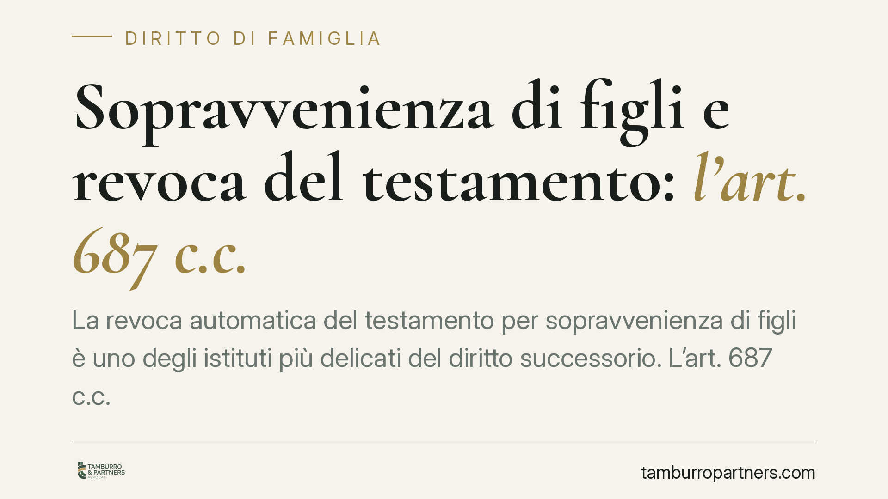

Sopravvenienza di figli e revoca del testamento: l'art. 687 c.c.
La revoca automatica del testamento per sopravvenienza di figli è uno degli istituti più delicati del diritto successorio. L'art. 687 c.c. ne disciplina i presupposti, ma la sua portata resta oggetto di interpretazione giurisprudenziale. Chi redige un testamento, o chi scopre di essere stato pretermesso, deve conoscere con precisione quando il testamento cade e quando, invece, operano i soli rimedi a tutela della legittima.

Il caso e l'istituto
La materia della revoca del testamento per sopravvenienza di figli torna periodicamente all'attenzione dei giudici di legittimità. Il tema è noto: cosa accade al testamento se, dopo la sua redazione, nasce un figlio del testatore, oppure se un figlio – già esistente ma ignoto al testatore – viene successivamente riconosciuto o accertato giudizialmente?
La risposta non è univoca e dipende dalla corretta lettura dell'art. 687 del codice civile.
Inquadramento normativo
L'art. 687 c.c. ("Revocazione per sopravvenienza di figli") stabilisce che le disposizioni testamentarie fatte da chi, al tempo del testamento, non aveva o ignorava di avere figli o discendenti, sono revocate di diritto per l'esistenza o la sopravvenienza di un figlio o discendente, anche solo concepito, al momento della morte del testatore.
Il dato testuale contempla quindi due ipotesi distinte:
- il testatore che al momento del testamento non aveva figli, e poi ne sopravviene uno;
- il testatore che aveva figli ma ignorava di averne, e poi quel figlio emerge (ad esempio per riconoscimento o accertamento giudiziale della paternità).
La *ratio* dell'istituto è protettiva nei confronti del discendente sopravvenuto o scoperto: la legge presume che il testatore, se avesse conosciuto l'esistenza di quel figlio, avrebbe disposto diversamente. Su questa linea si collocano le Sezioni Unite con la nota pronuncia n. 11195 del 1997, che hanno valorizzato l'esigenza di tutela del figlio piuttosto che la sola mutata volontà presunta del testatore.
È importante non semplificare: non è corretto affermare che la revoca non operi mai quando il testatore era già genitore di altri figli. Occorre invece verificare, caso per caso, se ricorra una delle ipotesi tipizzate dall'art. 687 c.c. – in particolare l'ignoranza dell'esistenza del figlio poi emerso. L'accertamento è di fatto e va condotto sulla situazione concreta del de cuius al momento della redazione del testamento.
Revoca ex art. 687 c.c. e azione di riduzione: due piani diversi
La distinzione è decisiva per orientare la strategia.
La revoca ex art. 687 c.c. travolge l'intero testamento: cadute le disposizioni testamentarie, la successione si apre secondo le regole della successione legittima (artt. 457 e ss. c.c.). È un rimedio "forte", ma presuppone che ricorrano i rigorosi presupposti della norma.
L'azione di riduzione (artt. 553 e ss. c.c., con i profili di cui agli artt. 561 e 564 c.c.) opera invece su un piano diverso e più limitato: non annulla il testamento, ma riequilibra le attribuzioni fino a reintegrare la quota di legittima spettante al legittimario leso o pretermesso. I legittimari sono individuati dall'art. 536 c.c.: coniuge, figli e, in mancanza di figli, gli ascendenti.
In sintesi: la revoca fa cadere tutto; la riduzione riallinea solo la parte indisponibile.
Nel calcolo della massa su cui determinare la legittima occorre tenere conto anche delle donazioni fatte in vita dal defunto, da sottoporre a collazione e riunione fittizia ai fini del computo. Trascurare questo passaggio porta spesso a stime errate della quota effettivamente lesa.
Attenzione ai termini
L'azione di riduzione è soggetta al termine di prescrizione decennale. Secondo l'orientamento prevalente, il *dies a quo* decorre dalla data di accettazione dell'eredità da parte del chiamato in base al testamento che si intende ridurre, e non dalla semplice apertura della successione. La corretta individuazione del momento iniziale è spesso oggetto di contenzioso: è un profilo da verificare con attenzione prima di agire.
Cosa fare in concreto
- Verifica la situazione al momento del testamento: ricostruisci se il testatore avesse o ignorasse l'esistenza del figlio poi emerso. È il presupposto che discrimina tra revoca e semplice riduzione.
- Qualifica correttamente il rimedio: distingui tra revoca ex art. 687 c.c. (caduta dell'intero testamento) e azione di riduzione (reintegro della sola legittima lesa).
- Ricostruisci la massa ereditaria includendo le donazioni in vita, da sottoporre a collazione e riunione fittizia per un calcolo corretto della quota.
- Controlla i termini: consigliamo di verificare subito la decorrenza del termine decennale di prescrizione dell'azione di riduzione, individuando con precisione il *dies a quo*.
- Raccogli la documentazione: testamento, atto di riconoscimento o sentenza di accertamento della paternità, atti di donazione e dichiarazioni di accettazione dell'eredità.
Disclaimer
Contributo informativo a cura di Tamburro & Partners - Avv. Giuseppe Tamburro. Non costituisce parere legale.
Ogni famiglia ha il suo equilibrio.
Separazione, divorzio, affidamento, assegno: se vuoi un confronto riservato su una specifica situazione, scrivi allo studio. Ti rispondiamo entro un giorno lavorativo.